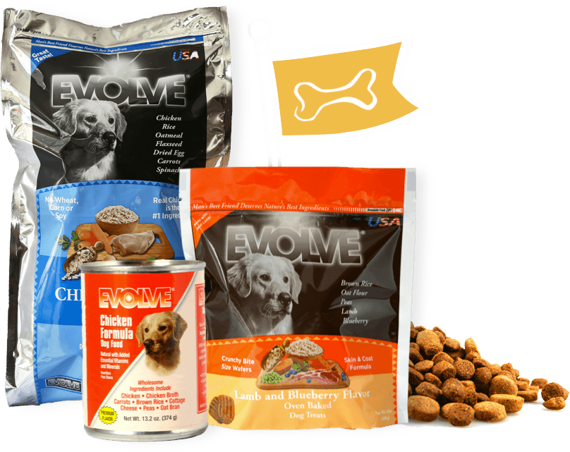

Acerca de nosotros
Veterinaria "PETS LIFE" es un centro de atención de mascotas que se dedica a proporcionar servicios médicos de alta calidad
y atención cálida a nuestros pacientes y sus familias. Nuestro compromiso es otorgar los mejores tratamientos médicos
hospitalarios, adquiriendo habilidades, destrezas y utilizando las últimas tecnologías para garantizar la salud y
el bienestar de las mascotas.

Vision
Ser reconocidos como una clínica veterinaria líder en el cuidado y bienestar de los animales,
manteniendo normas de excelencia profesional y dedicación al bienestar de las mascotas que atendemos.

Mision
Nuestra misión es proporcionar atención médica de calidad a las mascotas, brindando un servicio excepcional
y cálido a los pacientes y sus familias. Nos esforzamos por adquirir nuevas habilidades,
destrezas y utilizar tecnologías avanzadas para ofrecer tratamientos médicos hospitalarios de primera clase.